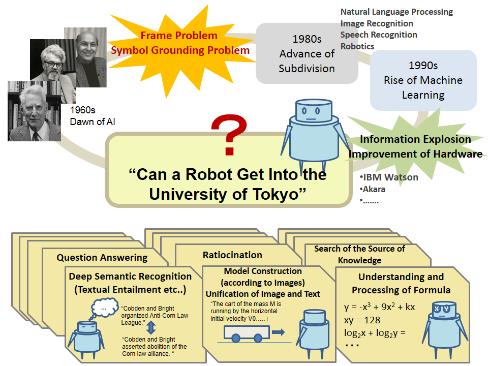

This project was launched by National Institute of Informatics (Research Organization of Information and Systems) in order to provide young people with a dream, blaze new trail, and re-unify the artificial intelligence field subdivided in 1980 and afterwards.

Our research activities are focused towards attaining a high score in National Center Test for University Admissions by 2016, and passing the entrance exam of University of Tokyo in 2021. We would like to create future value in the information technology field by raising the accuracy of the artificial intelligence techniques accumulated so far, and, together with external researchers, deepen our understanding of human thought. Moreover, in this project, we aim not only to accumulate interdisciplinary knowledge and advanced technologies, but also to cooperate with researchers outside Japan.